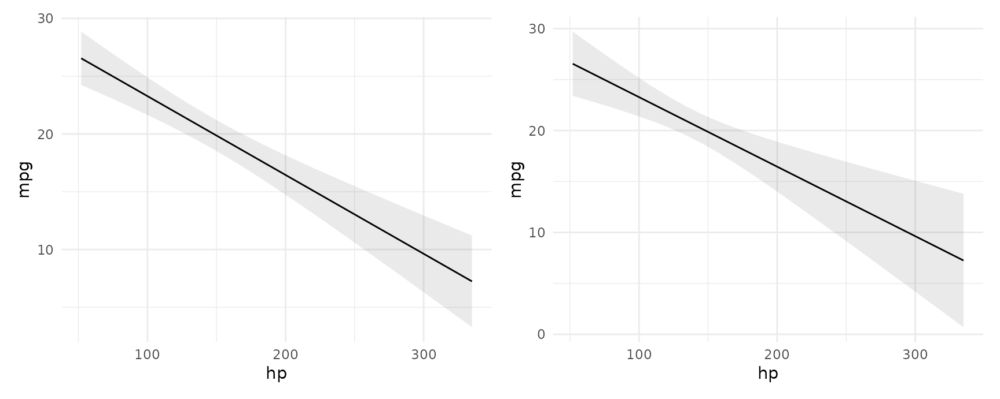

The code in this vignette requires version 0.5.0 of marginaleffects and 0.17.1 of insight.
Table of Contents:
All the functions in the marginaleffects package can compute robust standard errors on the fly for any model type supported by the sandwich package. The vcov argument supports string shortcuts like "HC3", a one-sided formula to request clustered standard errors, variance-covariance matrices, or functions which return such matrices. Here are a few examples.
Adjusted predictions with classical or heteroskedasticity-robust standard errors:
library(marginaleffects)
library(patchwork)
mod <- lm(mpg ~ hp, data = mtcars)
p <- predictions(mod)
head(p, 2)
#> rowid type predicted std.error statistic p.value conf.low conf.high
#> 1 1 response 22.59375 0.7772744 29.06792 9.135725e-186 21.07032 24.11718
#> 2 2 response 22.59375 0.7772744 29.06792 9.135725e-186 21.07032 24.11718
#> mpg hp
#> 1 21 110
#> 2 21 110
p <- predictions(mod, vcov = "HC3")
head(p, 2)
#> rowid type predicted std.error statistic p.value conf.low conf.high
#> 1 1 response 22.59375 0.8629746 26.18125 4.345995e-151 20.90235 24.28515
#> 2 2 response 22.59375 0.8629746 26.18125 4.345995e-151 20.90235 24.28515
#> mpg hp
#> 1 21 110
#> 2 21 110Marginal effects with cluster-robust standard errors:
mfx <- marginaleffects(mod, vcov = ~cyl)
summary(mfx)
#> Average marginal effects
#> Term Effect Std. Error z value Pr(>|z|) 2.5 % 97.5 %
#> 1 hp -0.06823 0.01868 -3.653 0.00025909 -0.1048 -0.03162
#>
#> Model type: lm
#> Prediction type: responseComparing adjusted predictions with classical and robust standard errors:

For linear mixed effects models we can apply the Satterthwaite and Kenward-Roger corrections in the same way as above:
library(marginaleffects)
library(patchwork)
library(lme4)
dat <- mtcars
dat$cyl <- factor(dat$cyl)
dat$am <- as.logical(dat$am)
mod <- lmer(mpg ~ hp + am + (1 | cyl), data = dat)Marginal effects at the mean with classical standard errors and z-statistic:
marginaleffects(mod, newdata = "mean")
#> rowid type term contrast dydx std.error statistic
#> 1 1 response hp dY/dX -0.05184187 0.01146238 -4.522786
#> 2 1 response am TRUE - FALSE 4.66614142 1.13425639 4.113833
#> p.value conf.low conf.high eps_tmp hp am cyl
#> 1 6.103101e-06 -0.07430772 -0.02937603 1e-04 146.6875 FALSE 8
#> 2 3.891429e-05 2.44303975 6.88924310 NA 146.6875 FALSE 8Marginal effects at the mean with Kenward-Roger adjusted variance-covariance and degrees of freedom:
marginaleffects(mod,
newdata = "mean",
vcov = "kenward-roger")
#> rowid type term contrast dydx std.error statistic p.value
#> 1 1 response hp dY/dX -0.05184187 0.01518878 -3.413168 0.09642973
#> 2 1 response am TRUE - FALSE 4.66614142 1.28244270 3.638479 0.08741990
#> conf.low conf.high df eps_tmp hp am cyl mpg
#> 1 -0.1305545 0.0268707 1.682575 1e-04 146.6875 FALSE 8 20.09062
#> 2 -1.9798401 11.3121230 1.682575 NA 146.6875 FALSE 8 20.09062We can use the same option in any of the package’s core functions, including:
plot_cap(mod, condition = "hp", vcov = "satterthwaite")
All the standard errors generated by the marginaleffects package are estimated using the delta method. Mathematical treatments of this method can be found in most statistics textbooks and on Wikipedia. Roughly speaking, the delta method allows us to approximate the distribution of a smooth function of an asymptotically normal estimator.
Concretely, this allows us to generate standard errors around functions of a model’s coefficient estimates. Predictions, contrasts, marginal effects, and marginal means are functions of the coefficients, so we can use the delta method to estimate standard errors around all of those quantities. Since there are a lot of mathematical treatments available elsewhere, this vignette focuses on the “implementation” in marginaleffects.
Consider the case of the marginalmeans() function. When a user calls this function, they obtain a vector of marginal means. To estimate standard errors around this vector:
The main function used to compute standard errors in marginaleffects is here: https://github.com/vincentarelbundock/marginaleffects/blob/main/R/get_se_delta.R
The predictions() function behaves slightly differently. For GLM and mixed effects models, predictions() function delegates the computation of standard errors and confidence intervals to the get_predicted() function of the insight package. The benefit is that insight tries to compute predictions and confidence intervals on the link scale, and then transforms them to the response scale. This ensures that, for example, confidence intervals around predicted probabilities do not stretch outside the \([0,1]\) interval.
This type of transformation is not done automatically in the case of marginalmeans(), comparisons() or marginaleffects() function. Similar results can be achieved in marginalmeans() by using the type="link" argument and by supplying an appropriate transformation function to the transform_post argument (available in version 0.5.1 of the package). The insight::link_inverse() function could be helpful here.
The marginaleffects package handles the calculation of standard errors and confidence intervals entirely on its own for these quantities: marginal effects, marginal means, and contrasts. Uncertainty estimates around adjusted predictions are handled in a two-step process.
First step: Try to outsource the computation of adjusted predictions to the get_predicted() function of the insight package. The benefit of using package is that it can make predictions on the link scale and then apply back transformations to make sure that confidence intervals make sense (e.g., stay inside 0 and 1 in logit models). The downside of relying on insight is that insight can only compute confidence intervals and standard errors for a limited range of models.
Second step: If insight does not return confidence intervals or standard errors for adjusted predictions, marginaleffects uses the delta method to compute standard errors on the scale defined by the type argument. That standard error thus estimated have desirable properties under the normal assumptions., but since there is no back-transformation, it is not always advisable to use them to construct symmetric confidence intervals around adjusted predictions.
The summary() and tidy() functions compute the average marginal effect (or contrast) when they are applied to an object produced by marginaleffects() (or comparisons()). This is done in 3 steps:
As explained succinctly on Stack Exchange:
we want the variance of the Average Marginal Effect (AME) and hence our transformed function is: \(AME = \frac{1}{N} \sum_{i=1}^N g_i(x_i,\hat{\beta})\) Then using the delta method we have \(Var \left( g(\hat{\beta}) \right) = J_g' \Omega_{\hat{\beta}} J_g\) where \(\Omega_{\hat{\beta}} = Var(\hat{\beta})\) and \(J_g' = \frac{\partial\left[\frac{1}{N}\sum_{i=1}^N g (x_i,\hat{\beta})\right]}{\partial \hat\beta} = \frac{1}{N}{\left[\sum_{i=1}^N \frac{\partial \left (g (x_i,\hat{\beta})\right)}{\partial \hat\beta}\right]}\) Which justifies using the “average Jacobian” in the delta method to calculate variance of the AME.
References: